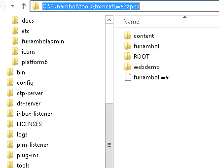

Install Funambol 10.0.2 on Windows
- Download from
https://sourceforge.net/projects/funambol/
- Run the setup program as admin, and it is recommended to install to
somewhere like c:\Funambol rather than
c:\Program Files (x86)
- In the last step of the setup program, don't run Funambol yet, but
go to
C:\Funambol\tools\tomcat\webapps. If sub folder funambol does not
exist, you will need to extract funambol.war to subfolder funambol.

- Then finish the setup program, and Funambol should be running.
If you somehow finished the setup program without extracting
funambol.war. You may:
- Extract funambol.war as described above.
- Go to c:\funambol\bin, and run
StopAll.cmd
- Then run StartAll.cmd
If you want to run Funambol server at startup, you may add StartAll.cmd
to Windows Task Scheduler.
There exist an admin tool in
c:\funambol\admin. The default password for admin is sa, and the default
port is 8080.
For more details, please read the
Funambol administration manual.